User’s Guide
The MACPHY USB to T1S bridge is a software driven bridge/media converter project, allowing direct network access to a 10Base-T1S network via USB. The 10Base-T1S connectivity is provided by the Analog Devices AD3306 MACPHY. The microcontroller, including USB connectivity, is provided by the Analog Devices MAX32690 MCU. Features of this project include:
Software controlled USB networking (NCM) - Windows, Linux and Mac compatible
Integrated USB serial console for control and configuration
Non-Volatile memory for persistent settings
Bootloader with USB mass storage for easy reprogramming
Wireshark and EdgeStudio support (via networking)
EdgeStudio support (via USBi)
Getting Started
Installing Device Drivers
The MACPHY USB to T1S comes pre-loaded with the bridge software so it is ready to use out of the box. The USB descriptor features a standard NCM and CDC Serial device classes, and do not require special drivers to be installed on your system and should enumerate automatically when connected.
Windows
Once installed, the device should appear as an Analog Devices T1S Network Interface in the device manager:
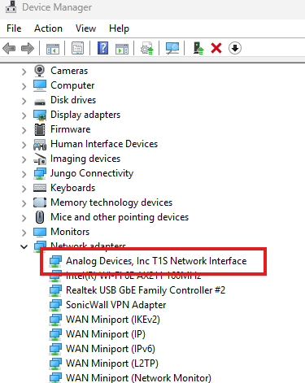
And as a valid network device in the Network Adapters. Note the adapter name (i.e. Ethernet 9) may be different on your machine:
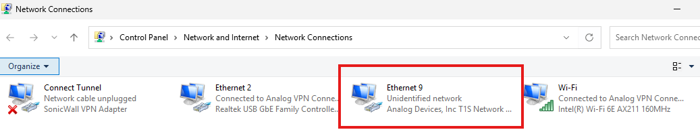
As well as a Generic Serial Port in the device manager. Note the COM number may be different on your machine:
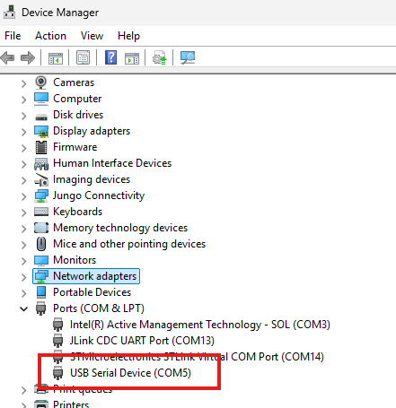
Linux
For most standard Linux installations, no additional device drivers are
required for us. The project has been tested with out-of-the-box
versions of Ubuntu and Raspberry PI OS. When connected to a Linux
system, detection of the device can be verified with the command
lsusb , looking for the 0456:1140 device VID and PID.
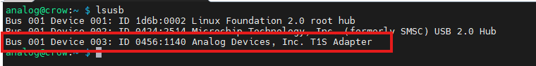
Further, the device will appear as a network device, visible to tools
such as ifconfig , as well as the device itself within
/sys/class/net. Note, the device name (i.e eth1) may be different on
your machine.
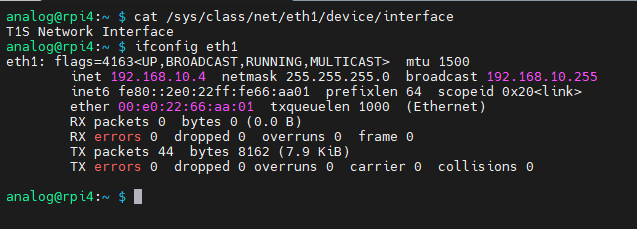
The integrated USB serial console will also be present within the
/dev/ folder, typically as /dev/ttyACM# or /dev/ttyUSB#
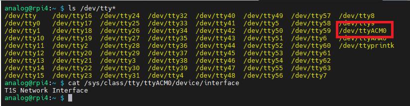
Mac OS
USB-NCM and USB serial is natively supported on MacOS, however this project has not yet been tested on MacOS systems.
Network Configuration
The NCM network device will appear as any standard networking adapter for your host computer, and can be configured the same as any other connection. For use as a general network monitor (sniffer) or L2 networking only (e.g. 10Base-T1S), configuring an IP address is not necessary. However, for TCP/IP networking, it is recommended to set a compatible IP address for your network. The process for configuring an IP address is not specific to this device, however here are some helpful links:
Windows - Essential Network Settings and Tasks
Raspberry PI - Network Configuration
Ubuntu - Network Manual
Mac OS -
USB Console Port
The configuration of the device is done through a USB emulated serial port. When connecting to the port, the baud rate and other settings are ignored due to the direct USB connection. There are a variety of tools which can be used to access the console, with just a few listed below. Tool choice is a matter of preference and the functionality should be consistent regardless.
The menu system leverages VT100 style special characters. Ensure the terminal emulation mode of your tool of choice is setup for VT100 for best performance.
Hardware Overview
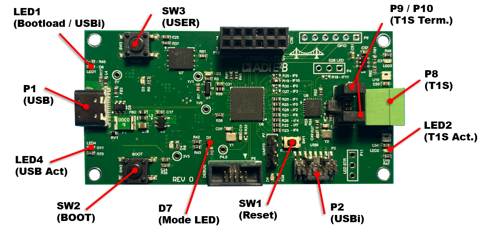
Connectors and Jumpers
P1 - USB
P1 is the USB-C connector which provides 5V power to the board and USB connectivity to the microcontroller providing the USB networking device and serial console.
P8 - T1S
P8 is the connector for joining the T1S network with unshielded, twisted pair wire. The connector is compatible with standard Phoenix Contact 3.81 mm pitch terminals.
P2 - USBi
P9 / P10 - T1S Termination
P9 and P10 provide 50 Ohm termination to the T1S data bus. When operating as the end node (the first or last node) on a bus, install jumpers on P9 and P10 to correctly terminate the bus. When installed as a drop or middle node on a multi-drop bus, leave P9 and P10 open.
LEDs
LED1 - Bootloader / USBi
LED1 is a red LED. When illuminated, it indicates the MCU is currently in the bootloader state, awaiting a new software load. The USB connection will be the bootloader’s mass storage device and normal networking bridge operation will not be active.
This mode also allows the USBi connector to be used for direct SPI interaction with the AD3306 MACPHY for use with EdgeStudio and USBi adapter. The MCU’s SPI peripheral will be in reset, allowing unrestricted access to the SPI signals.
LED2 - T1S Activity
LED2 is a greed LED. Flashing indicates inbound activity on the T1S network interface. Given the functionality of the software is a bridge, the LED indicates inbound activity only to help determine the origin of network traffic.
LED4 - USB Activity
LED4 is a greed LED. Flashing indicates inbound activity on the USB network interface. Given the functionality of the software is a bridge, the LED indicates inbound activity only to help determine the origin of network traffic.
D7 - Mode
D7 is a tri-color LED used to indicate operating mode.
Green - When illuminated green, this indicates the software is operating in bridge mode, allowing bidirectional traffic between the USB network interface and the T1S network
Blue - When illuminated blue, this indicates the software is operating in sniffer mode, allowing the USB network interface to monitor T1S traffic, but not send data onto the T1S network.
Power Good LEDs
In addition, D2 (1.1V), D3 (5V), and D4 (3.3V) are red LEDs providing power good indicators for the on-board power supplies. It is expected these are all illuminated upon USB-C power being applied. These LEDs are not called out in the above figure.
General Operation
Bridge Mode
Bridge mode is the primary operating mode of the system, allowing a host computer to join a 10Base-T1S network via the USB network interface.
It is important to understand that the Bridge should be considered a transparent device similar to a USB to Ethernet or Wifi adapter would be. In other words, the bridge itself is not a node on the network, but rather the USB host is the active network node. As part of the configuration, the bridge has an assignable MAC address. This MAC address is the address of the USB interface of the host.
During operation, the bridge transparently moves incoming frames from
USB out T1S, and vice versa, The T1S network is capable of a maximum of
10Mbps, while the USB network interface is capable of supporting more.
Through the use of internal buffers, there is some tolerance for USB
rates exceeding 10Mbps, however if the host exceeds this rate beyond the
capacity of buffering, the frames will be silently dropped by the
bridge. The statistics of network traffic, including the number of
dropped frames can be seen from the console interface stats
command.
This mode is indicated by a green status LED D7. To switch to Bridge mode from sniffer mode, hold down the USER button for 3 seconds until D7 turns green. Bridge mode can be set as the power on default mode via the console interface.
Sniffer Mode
Sniffer mode provides similar functionality to Bridge mode by joining a T1S network via USB, however traffic is restricted to the USB host only receiving T1S bus data, not allowing data to be put on to the bus. The primary use case of this mode is with tools such as Wireshark to allow passive monitoring and inspection of the bus traffic for debugging and characterization.
From a host computer stand point, there is no visible difference between
bridge and sniffer modes in how the network interface is added and
displayed in the system, as standard USB network interfaces (NCM in this
case) do not offer a simplex configuration option. The traffic control
preventing USB origin traffic from the T1S bus is done in the bridge
software, where USB frames are silently dropped. These dropped frames
will not be indicated in the stats display when in sniffer mode.
Depending on the host PC, the system may attempt to send frames over the USB network interface as part of its normal operation (DHCP requests, local network advertising, etc). These frames will be dropped by the bridge, however will be visible in tools such as Wireshark as transmitted traffic. It is recommend to apply a Rx only filter when using Wireshark to get a clear visual of the actual T1S bus.
This mode is indicated by a blue status LED D7. To switch to sniffer mode from bridge mode, hold down the USER button for 3 seconds until D7 turns blue. Sniffer mode can be set as the power on default mode via the console interface.
Tip
While sniffer mode is limited to only receiving traffic from the T1S bus, the node is still inherently part of the network bus. Caution must be used to ensure there are no conflicts when PLCA is enabled.
For buses with PLCA enabled, a coordinator (PLCA ID 0) should already be present. Verify the sniffer’s ID is unique amongst all other nodes, and not Node ID 0 to avoid assuming the PLCA coordinator responsibility. Alternatively, PLCA may be disabled on the sniffer node to avoid any conflicts, regardless of the PLCA usage of the rest of the bus.
Bootloader / USBi Mode
In bootloader mode, the main MCU software is not loaded and instead a USB-based drag-and-drop bootloader is running to support program updates. The USB interface will appear as a mass storage device on the host PC. See Re-Programming for additional details on using this mode.
This mode is indicated by a red status LED1. To enter bootloader mode, hold the BOOT button for 3 seconds while in bridge or sniffer mode. This will reset the board into the bootloader. Alternatively, preset the RESET button twice within 500ms to enter the bootloader.
USBi
While in bootloader mode, many of the MAX32690 MCU peripheral interfaces, including the SPI bus to the AD3306 are disabled. This allows use of the P2 USBi to directly utilize the SPI bus to the AD3306 with EdgeStudio. See the EdgeStudio user’s guide for more information on using the USBi interface within the tools.
Console Interface and Configuration
The console interface is provided through a USB virtualized serial port. See USB Console Port for recommendations on terminal tools for your host computer. The terminal is a menu-based system.
On most terminal software, the Up/Down arrow keys can navigate the menu,
however some terminal applications do not support the arrows correctly.
As an alternative the w (up) and s (down) keys can be used
instead.
Menu Navigation:
Up/Down or w/s, Move the selected menu index up or down
Enter - Enter the sub menu or configuration field
ESC - Go back a page
A typical menu will look like the following, with the actively selected row highlighted:
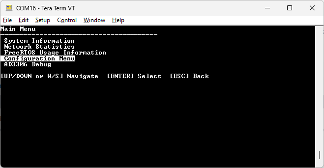
When editing configuration values, or other screens which require user input, contextual help will be displayed to indicate the purpose of the field, ranges and other useful information. Below is an example of a configuration screen for the MAC address:
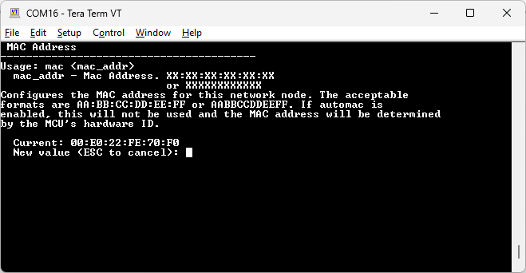
Main Tree
For reference, the menu tree is expanded in the diagram below. Detailed descriptions of these blocks are in the paragraphs that follow.
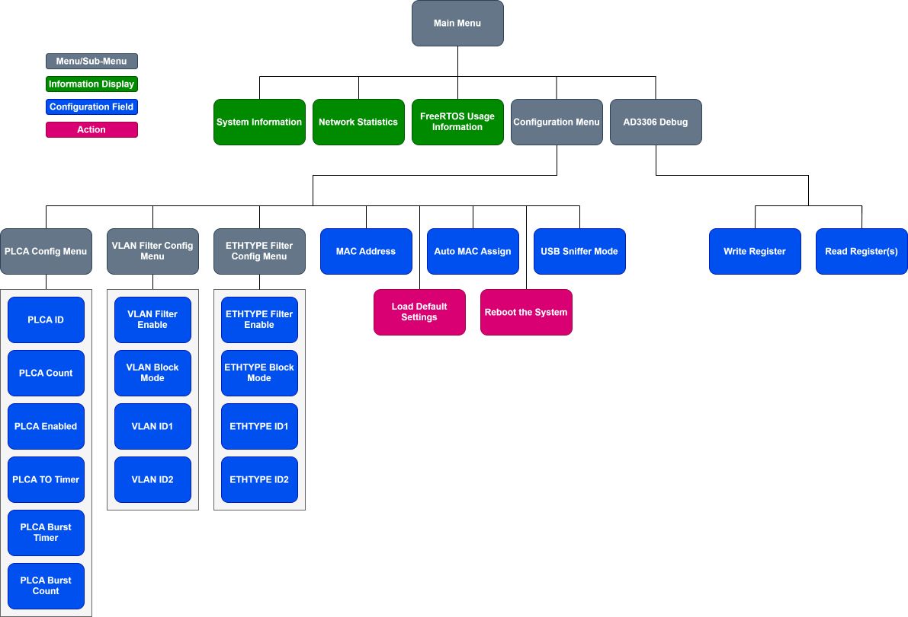
Re-Programming
To simplify software updates, the T1S USB bridge utilizes a drag and drop USB-based bootloader for loading new software. See the Bootloader section for information on entering bootloader mode. Once bootloader mode is active, the system will appear as a mass storage device. Below is the expected storage device while running Windows.
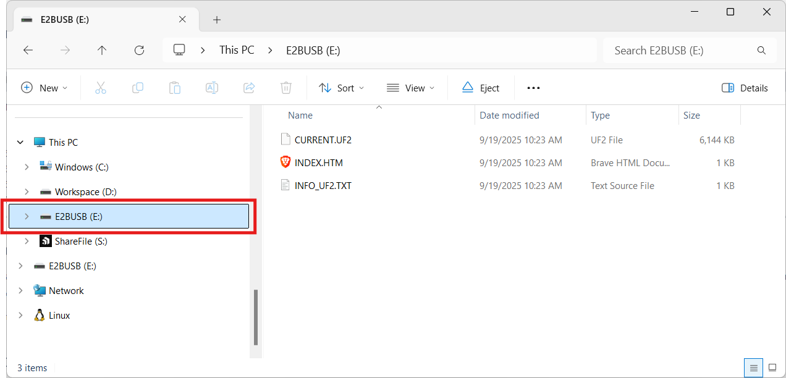
To reprogram the board, drop the provided .UF2 file into the mass
storage drive. Once the programming is complete, the system will
automatically restart into the main software. You can confirm the
software version was loaded correctly through the info command in
the main menu of the console interface.
The .UF2 files will be available with each release on Github.
Note
There is a known issue on Windows machines where due to the speed the device updates the flash during the drag-and-drop process and immediately resetting to run the application, Windows may throw an error about the device no longer existing. This can be ignored clicking the cancel button.
Note
There is a known issue on Mac OSX machines where once the UF2 file is copied, an error notice might appear stating “The Finder can’t complete the operation because some data … can’t be read or written”. This can be ignored by pressing OK.
Note
An additional notice of “Disk Not Ejected Properly” may appear. This can also be ignored (dismiss by pressing the notice close or cancel).